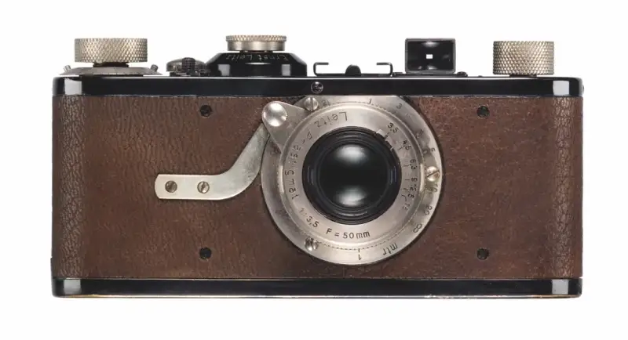
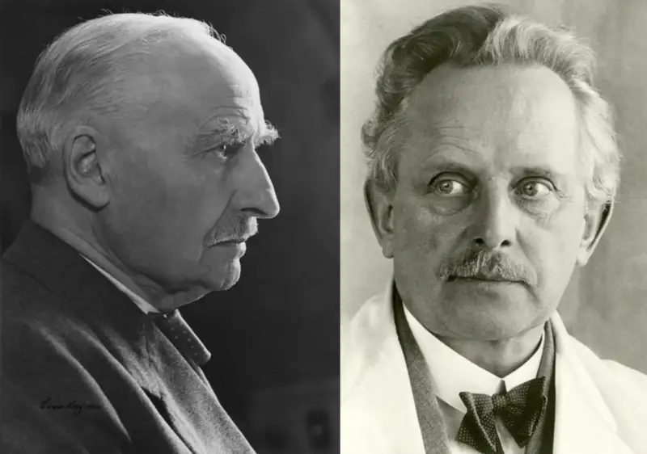
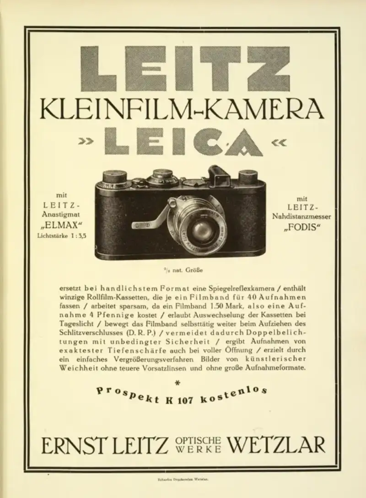

December 31, 2024, mainland China. For Leica Camera, 2025 marks the 100th anniversary of the Leica I. In 1925, the Leica I was shown for the first time at the Leipzig Spring Fair. It was the first Leica 35mm camera to be made in large numbers. The camera was portable and easy to use. It opened a new way of taking photos and changed the whole world of photography. Under the slogan "Leica at 100: A Century of Witness," Leica Camera will hold a range of events around the world, including many arts events and several new products.

"At this point, I decided to take a risk." With these words, the entrepreneur Ernst Leitz II made the final call to put Oskar Barnack's groundbreaking invention, the "Ur-Leica," into production. Barnack was a precision mechanic and head of the testing department at Ernst Leitz Werke. In his spare time he took up photography and set out to develop a new compact 35mm camera. As early as 1914 he had built the Ur-Leica prototype, but the outbreak of the world war delayed his later improvements to the Leica prototype. After it appeared at the Leipzig Spring Fair in 1925, the Leica I sparked a photography revolution. As the first small, lightweight Leica 35mm camera to use 24x36mm film, the Leica I made photography a natural part of everyday life. For the first time, people could easily capture real life and seize the decisive moment. This created new possibilities for how photography was used and expressed. Press photography, documentary photography, street photography, and art photography were born with it.

Ernst Leitz II / Oskar Barnack
The Leica I was the first milestone product in the Leica family and the base of the company's long success. Even today, Leica plays a key role in the development of photo technology. It invests in breakthrough technology and keeps opening new fields. Leica stands for durable "Made in Germany" quality, a unique image culture, and a serious commitment to promoting photography, a position no one has matched.

In 2025, the Leica Camera Group will invite the worldwide community of photographers to celebrate 100 years of the Leica I. Leica branches will hold events of international impact in major cities such as Dubai, Milan, New York, Shanghai, and Tokyo. Leica galleries around the world will also host high-level exhibitions of work by outstanding photographers. In June, the Leica Camera headquarters in Wetzlar will hold a series of events that bring the centenary to its peak. Leica also welcomes international guests to a week of cultural events for the centenary. To honor Wetzlar, the birthplace of Leica, the company will hold more cultural projects there. At the same time, Leica will release a series of special-edition products to mark 100 years of this landmark camera. The Ernst Leitz Museum will screen a film by Reiner Holzemer about the development of 35mm photography, and show work by the noted photographer Sebastião Salgado.
Leica Camera: Walking with photography
Leica Camera is an international company that makes high-end cameras and sports optics. Leica's lasting quality, German craft, industrial design, and constant innovation built the company's century-long legend. As a key part of its brand culture, Leica runs many programs to advance the art of photography. Besides its Leica Galleries and Leica Academies around the world, Leica has created the Leica Hall of Fame Award and the Leica Oskar Barnack Award (LOBA). The LOBA is seen as one of the most innovative sponsorship awards today. Leica Camera is headquartered in Wetzlar, in the German state of Hesse. It has another production site in Vila Nova de Famalicão, Portugal, and a worldwide network of branches and Leica retail stores.